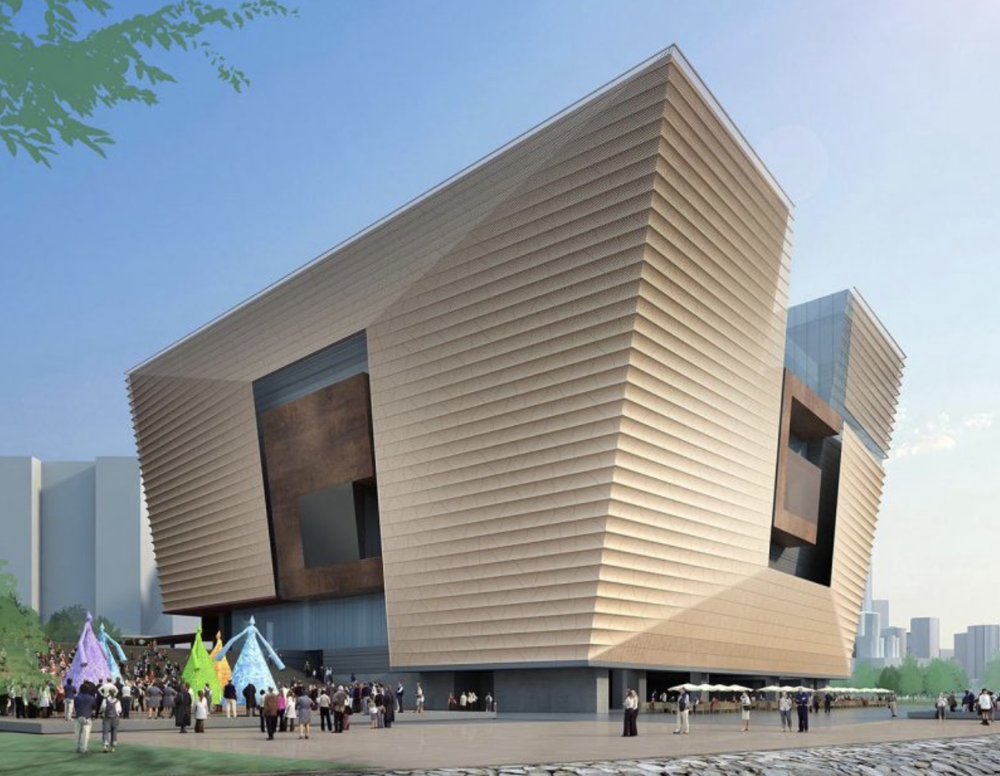

Jiayi Gao
Jobs :)
Here is my working experience.
|  Ove Arup & Partners International Limited | Mar.2018 - May.2019 |
1. Transferred complex dynamic spacial model into a finite element analysis model using Python-based Grasshopper. 2. Provided visual design coupled with real-time performance-based computer simulations under extreme conditions. 3. Researched extensive paper, books, and code of practice. Encoded design regulations and relevant mathematical formulas using VBA to automate the complex structural design process. 4. Extracted millions of data from the finite element model and automate the subsequent data analysis process. 5. Greatly improved design efficiency. Easy-adjustable and can be utilized in multiple projects. 6. Successfully utilized in the structural design of the Hong Kong Palace Museum (a $3.5 billion project) and deliver it to the construction stage on time. |